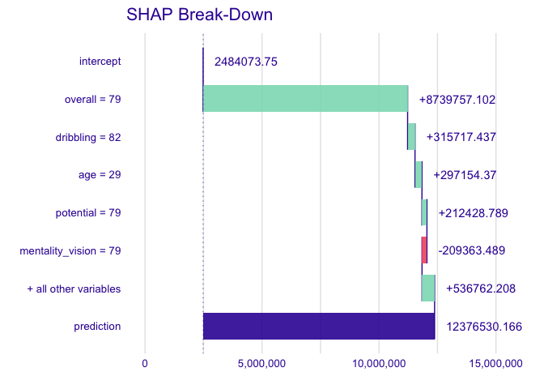

In the era of complicated classifiers conquering their market, sometimes even the authors of algorithms do not know the exact manner of building a tree ensemble model. The difficulties in models’ structures are one of the reasons why most users use them simply like black-boxes. But, how can they know whether the prediction made by the model is reasonable? treeshap is an efficient answer for this question. Due to implementing an optimized algorithm for tree ensemble models (called TreeSHAP), it calculates the SHAP values in polynomial (instead of exponential) time. Currently, treeshap supports models produced with xgboost, lightgbm, gbm, ranger, and randomForest packages. Support for catboost is available only in catboost branch (see why here).
Installation
The package is available on CRAN:
install.packages('treeshap')You can install the latest development version from GitHub using devtools with:
devtools::install_github('ModelOriented/treeshap')Example
First of all, let’s focus on an example how to represent a xgboost model as a unified model object:
library(treeshap)
library(xgboost)
data <- fifa20$data[colnames(fifa20$data) != 'work_rate']
target <- fifa20$target
param <- list(objective = "reg:squarederror", max_depth = 6)
xgb_model <- xgboost::xgboost(as.matrix(data), params = param, label = target, nrounds = 200, verbose = 0)
unified <- unify(xgb_model, data)
head(unified$model)
#> Tree Node Feature Decision.type Split Yes No Missing Prediction Cover
#> 1 0 0 overall <= 81.5 2 3 2 NA 18278
#> 2 0 1 overall <= 73.5 4 5 4 NA 17949
#> 3 0 2 overall <= 84.5 6 7 6 NA 329
#> 4 0 3 overall <= 69.5 8 9 8 NA 15628
#> 5 0 4 potential <= 79.5 10 11 10 NA 2321
#> 6 0 5 potential <= 83.5 12 13 12 NA 221Having the object of unified structure, it is a piece of cake to produce SHAP values for a specific observation. The treeshap() function requires passing two data arguments: one representing an ensemble model unified representation and one with the observations about which we want to get the explanations. Obviously, the latter one should contain the same columns as data used during building the model.
treeshap1 <- treeshap(unified, data[700:800, ], verbose = 0)
treeshap1$shaps[1:3, 1:6]
#> age height_cm weight_kg overall potential international_reputation
#> 700 297154.4 5769.186 12136.316 8739757 212428.8 -50855.738
#> 701 -2550066.6 16011.136 3134.526 6525123 244814.2 22784.430
#> 702 300830.3 -9023.299 15374.550 8585145 479118.8 2374.351We can also compute SHAP values for interactions. As an example we will calculate them for a model built with simpler (only 5 columns) data and first 100 observations.
data2 <- fifa20$data[, 1:5]
xgb_model2 <- xgboost::xgboost(as.matrix(data2), params = param, label = target, nrounds = 200, verbose = 0)
unified2 <- unify(xgb_model2, data2)
treeshap_interactions <- treeshap(unified2, data2[1:100, ], interactions = TRUE, verbose = 0)
treeshap_interactions$interactions[, , 1:2]
#> , , 1
#>
#> age height_cm weight_kg overall potential
#> age -1886241.70 -3984.09 -96765.97 -47245.92 1034657.6
#> height_cm -3984.09 -628797.41 -35476.11 1871689.75 685472.2
#> weight_kg -96765.97 -35476.11 -983162.25 2546930.16 1559453.5
#> overall -47245.92 1871689.75 2546930.16 55289985.16 12683135.3
#> potential 1034657.61 685472.23 1559453.46 12683135.27 868268.7
#>
#> , , 2
#>
#> age height_cm weight_kg overall potential
#> age -2349987.9 306165.41 120483.91 -9871270.0 960198.02
#> height_cm 306165.4 -78810.31 -48271.61 -991020.7 -44632.74
#> weight_kg 120483.9 -48271.61 -21657.14 -615688.2 -380810.70
#> overall -9871270.0 -991020.68 -615688.21 57384425.2 9603937.05
#> potential 960198.0 -44632.74 -380810.70 9603937.1 2994190.74Plotting results
The explanation results can be visualized using shapviz package, see here.
However, treeshap also provides 4 plotting functions:
Feature Contribution (Break-Down)
On this plot we can see how features contribute into the prediction for a single observation. It is similar to the Break Down plot from iBreakDown package, which uses different method to approximate SHAP values.
plot_contribution(treeshap1, obs = 1, min_max = c(0, 16000000))
Feature Importance
This plot shows us average absolute impact of features on the prediction of the model.
plot_feature_importance(treeshap1, max_vars = 6)
Feature Dependence
Using this plot we can see, how a single feature contributes into the prediction depending on its value.
plot_feature_dependence(treeshap1, "height_cm")
Interaction Plot
Simple plot to visualize an SHAP Interaction value of two features depending on their values.
plot_interaction(treeshap_interactions, "height_cm", "overall")How to use the unifying functions?
For your convenience, you can now simply use the unify() function by specifying your model and reference dataset. Behind the scenes, it uses one of the six functions from the .unify() family (xgboost.unify(), lightgbm.unify(), gbm.unify(), catboost.unify(), randomForest.unify(), ranger.unify()). Even though the objects produced by these functions are identical when it comes to the structure, due to different possibilities of saving and representing the trees among the packages, the usage of these model-specific functions may be slightly different. Therefore, you can use them independently or pass some additional parameters to unify().
library(treeshap)
library(gbm)
x <- fifa20$data[colnames(fifa20$data) != 'work_rate']
x['value_eur'] <- fifa20$target
gbm_model <- gbm::gbm(
formula = value_eur ~ .,
data = x,
distribution = "laplace",
n.trees = 200,
cv.folds = 2,
interaction.depth = 2
)
unified_gbm <- unify(gbm_model, x)
unified_gbm2 <- gbm.unify(gbm_model, x) # legacy APISetting reference dataset
Dataset used as a reference for calculating SHAP values is stored in unified model representation object. It can be set any time using set_reference_dataset() function.
library(treeshap)
library(ranger)
data_fifa <- fifa20$data[!colnames(fifa20$data) %in%
c('work_rate', 'value_eur', 'gk_diving', 'gk_handling',
'gk_kicking', 'gk_reflexes', 'gk_speed', 'gk_positioning')]
data <- na.omit(cbind(data_fifa, target = fifa20$target))
rf <- ranger::ranger(target~., data = data, max.depth = 10, num.trees = 10)
unified_ranger_model <- unify(rf, data)
unified_ranger_model2 <- set_reference_dataset(unified_ranger_model, data[c(1000:2000), ])Other functionalities
Package also implements predict() function for calculating model’s predictions using unified representation.
How fast does it work?
The complexity of TreeSHAP is ùí™(TLD2), where T is the number of trees, L is the number of leaves in a tree, and D is the depth of a tree.
Our implementation works at a speed comparable to the original Lundberg’s Python package shap implementation using C and Python.
The complexity of SHAP interaction values computation is ùí™(MTLD2), where M is the number of explanatory variables used by the explained model, T is the number of trees, L is the number of leaves in a tree, and D is the depth of a tree.
CatBoost
Originally, treeshap also supported the CatBoost models from the catboost package but due to the lack of this package on CRAN or R-universe (see catboost issues issues #439, #1846), we decided to remove support from the main version of our package.
However, you can still use the treeshap implementation for catboost by installing our package from catboost branch.
This branch can be installed with:
devtools::install_github('ModelOriented/treeshap@catboost')